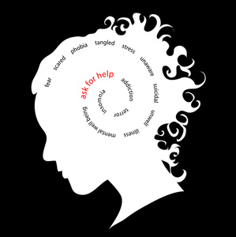

Benefits
Sudoku is a “Brain Game”
- Sudoku might help people reduce their risk of Alzheimer’s disease
- Sudoku promotes logic, deduction and problem solving
- Sudoku helps people reconnect with different parts of their brain that
they might not always get to utilize in everyday life
- It also helps us get better at spotting patterns, filling in gaps, and recognizing opportunities.
All of these mental abilities are very important to continue to utilize throughout our lives.
As the old saying goes, “Use it or lose it!”
- Sudoku creates a sense of order and accomplishment
- It reflects and reinforces the feeling of creating order and getting things done

- Coffee
- Tea
- Milk
Go Home